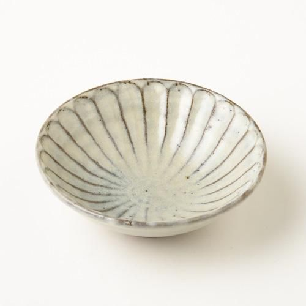
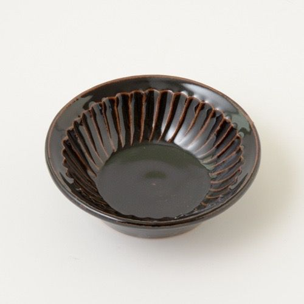

otonarisan
丹波焼・丹波立杭焼/Tanbayakiware
兵庫県丹波篠山市今田地区付近で焼かれる陶器で、茶褐色の土肌と素朴な風合いが魅力です
無骨ながらしっくりと手になじみ、自然な温かさを感じられる陶器です


歴史/History
その発祥は平安時代の終わりから鎌倉時代の初めと言われています
丹波焼は大別して穴窯時代と登窯時代とに分けられ、桃山末期までの400年間は穴窯が使用されていましたが、その後の江戸時代初期以降は現在も使われている朝鮮式半地上の「登窯」に代わりました